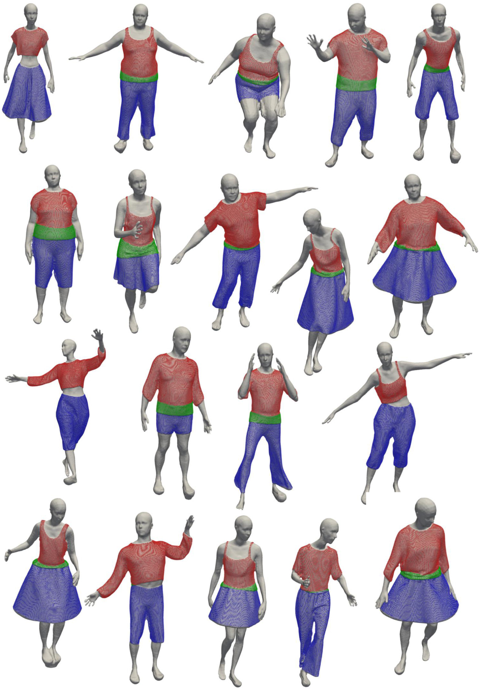

Point Cloud Segmentation for 3D Clothed Human Layering
A multilayer segmentation paradigm for clothed-human point clouds
Computers & Graphics
Clothed Human Layering. 3D Cloth modeling and simulation is essential for avatars creation in several fields, such as fashion, entertainment, and animation. Achieving high-quality results is challenging due to the large variability of clothed body especially in the generation of realistic wrinkles. 3D scan acquisitions provide more accuracy in the representation of real-world objects but lack semantic information that can be inferred with a reliable semantic reconstruction pipeline. To this aim, shape segmentation plays a crucial role in identifying the semantic shape parts. However, current 3D shape segmentation methods are designed for scene understanding and interpretation and only few work is devoted to modeling. In the context of clothed body modeling the segmentation is a preliminary step for fully semantic shape parts reconstruction namely the underlying body and the involved garments. These parts represent several layers with strong overlap in contrast with standard segmentation methods that provide disjoint sets. In this work we propose a new 3D point cloud segmentation paradigm where each 3D point can be simultaneously associated to different layers. In this fashion we can estimate the underlying body parts and the unseen clothed regions, i.e., the part of a cloth occluded by the clothed-layer above. We name this segmentation paradigm clothed human layering. We create a new synthetic dataset that simulates very realistic 3D scans with the ground truth of the involved clothing layers. We propose and evaluate different neural network settings to deal with 3D clothing layering. We considered both coarse and fine grained per-layer garment identification. Our experiments demonstrates the benefit in introducing proper strategies for the segmentation on the garment domain on both the synthetic and real-world scan datasets.
Gim3d scanned
The Gim3D Scanned Dataset provides high-quality 3D scans of clothed humans with detailed geometry and realistic clothing layers. It is derived from synthetic data scanned with a virtual scanner that reproduces noise and artifacts similar to real-world acquisitions. This dataset enables research on multilayer point cloud segmentation, including both visible and occluded garment regions, and serves as a benchmark for 3D reconstruction, virtual try-on, and human digitization.
Method

- Multilayer labeling. Predict layer memberships per point (body, garment types) including occluded regions.
- Feature heads. Use invariant features for class probabilities and confidences; use (optionally) equivariant features for geometric cues.
- Training data. Synthetic scans with multi-layer ground truth; evaluate on both synthetic and real scans.
Results


Add more results or link to a gallery page.
BibTeX
@article{garavaso2025point,
title={Point cloud segmentation for 3D Clothed Human Layering},
author={Garavaso, Davide and Masi, Federico and Musoni, Pietro and Castellani, Umberto},
journal={Computers \& Graphics},
pages={104393},
year={2025},
publisher={Elsevier}}
Resources
Code & Data
Contacts
- davide.garavaso@gmail.com
- federico.masi@univr.it
- pietro.musoni@unipr.it
- umberto.castellani@univr.it